In der Historie, welche in der Belegerfassung über den Button "Lieferhistorie" aufgerufen wird, werden die letzten Lieferungen (Lieferscheine ohne Fakturen / Fakturen ohne Lieferscheine / Fakturen auf Grundlage von Lieferscheinen) an einen Kunden bzw. von einem Lieferanten angezeigt.
Achtung
Artikel, welche bereits auf "inaktiv" gesetzt wurden, werden hier nicht berücksichtigt (angezeigt).
Hinweis
Werden in den Bereichen "Selektion" oder "Optionen" Änderungen vorgenommen, dann kann die Tabelle mit Hilfe des Buttons "Anzeigen" aktualisiert werden.
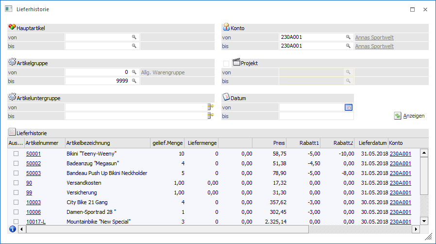
Selektion
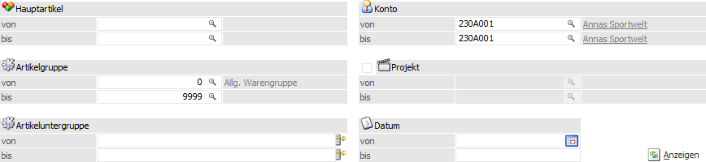
Im Bereich "Selektion" kann auf folgende Daten eingeschränkt werden:
Ø Hauptartikel von / bis
An dieser Stelle kann auf einen bestimmten Artikel eingeschränkt werden.
Ø Artikelgruppe von / bis
Hier ist die Selektion auf bestimmte Artikelgruppen möglich.
Ø Artikeluntergruppe von / bis
In dem Bereich ist die Eingrenzung auf Artikeluntergruppen möglich.
Ø Konto von / bis
An dieser Stelle ist die Selektion nach bestimmten Konten möglich.
Hinweis
Dieses Feld wird automatisch mit der Kontonummer des aktuellen Belegs gefüllt.
Ø Projekt von / bis
Wenn die Option bei "Projekt" aktiviert wird, dann ist eine Einschränkung aufgrund von Projekten möglich. Hierbei wird die Selektion automatisch mit der Projektnummer gefüllt, welche im Belegkopf manuell hinterlegt wurde.
Ø Datum von / bis
An dieser Stelle kann der zu betrachtende Zeitraum (Lieferdatum der Belegzeilen) hinterlegt werden.
Ø  Anzeigen
Anzeigen
Durch Anwahl des Buttons "Anzeigen" wird die Tabelle "Lieferhistorie", aufgrund der aktuellen Selektion und den aktuellen Optionen, neu befüllt.
Optionen
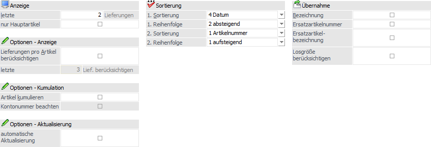
Durch Anklicken des Buttons "Optionen" können weitere Einstellungen für die Anzeige und die Übernahme der Artikel vorgenommen werden. Die Optionen werden hierbei benutzerspezifisch gespeichert.
Optionen - Bereich "Anzeige"
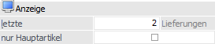
Ø letzte X Lieferungen
Hier kann definiert werden, wie viele der letzten Lieferungen angezeigt werden sollen. Dabei begrenzt die Eingabe in diesem Feld die Anzeige der letzten Lieferungen pro Laufnummer.
Ø nur Hauptartikel
Ist die Checkbox "nur Hauptartikel“ aktiviert, wird, statt der einzelnen Ausprägungsartikel, nur der Hauptartikel angezeigt.
Hinweis
Wurde ein Ausprägungsartikel direkt erfasst, ohne die Ausprägungsauswahl zu verwenden, wird (bei Aktivierung der Option "Hauptartikel") dieser Artikel nicht aufgeführt.
Optionen - Bereich "Optionen - Anzeige"
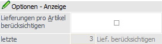
Ø Lieferungen pro Artikel berücksichtigen
Durch Aktivierung dieser Option kann in dem nachfolgenden Eingabefeld (letzte X Lief. berücksichtigen) ein Wert zwischen 1 und 3 eingetragen werden. Dadurch wird definiert, dass Artikel, die in den letzten Lieferungen öfters vorkommen, maximal so oft angezeigt werden, wie hinterlegt wurde.
Beispiel
In dem Bereich "Anzeige" wurde definiert, dass die "letzten 20 Lieferungen" berücksichtigt werden sollen. Zusätzlich wurde die Einstellung "letzte X Lief. berücksichtigen" aus dem Bereich "Optionen - Anzeige" mit "3" definiert.
Kommt nun ein Artikel in den letzten 20 Lieferungen 10 Mal vor, wird der Artikel trotzdem nur 3 Mal angezeigt, weil hier eben die Einstellung "letzte x anzeigen" wirkt. Wenn die Option deaktiviert ist, würden alle 10 Zeilen angezeigt werden.
Ø letzte X Lief. berücksichtigen
Wenn die Option "Lieferungen pro Artikel berücksichtigen" aktiviert wird, dann kann an dieser Stelle ein Wert zwischen 1 und 3 eingetragen werden.
Optionen - Bereich "Optionen - Kumulation"
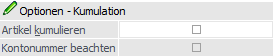
Ø Artikel kumulieren
Wenn diese Option aktiviert ist, dann werden Artikel, die gemäß "letzte X Lieferungen" mehrfach vorhanden sind, auf eine Zeile zusammengefasst, wobei die Informationen wie Preis und Lieferdatum von der jeweils letzten Lieferung in der Tabelle angezeigt werden. Die "gelief. Menge" wird über alle Lieferungen kumuliert.
Hinweis
Wenn die Option "Artikel kumulieren" in Zusammenhang mit der Selektion von mehreren Konten durchgeführt wird, dann bleibt in der Tabelle das Feld Kontonummer leer (außer, der Artikel kommt nur bei einem Konto vor), die weiteren Informationen wie Laufnummer etc. werden vom höchsten Beleg ausgelesen und haben somit keine Relevanz.
Ø Kontonummer beachten
Diese Option kann nur verwendet werden, wenn die Option "Artikel kumulieren" aktiviert wurde. Diese Option hat allerdings nur dann eine Auswirkung, wenn bei der Selektion auch mehrere Konten ausgewählt werden. Damit werden dann die Artikel pro Konto kumuliert und dargestellt. Die Informationen wie Preis, Laufnummer etc. werden vom höchsten Beleg ausgelesen.
Optionen - Bereich "Optionen - Aktualisierung"
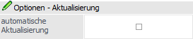
Ø Automatische Aktualisierung
Alle Einstellungen werden durch nochmaliges Anklicken des Buttons "Optionen" benutzerspezifisch gespeichert und man befindet sich wieder im Hauptfenster. Um anschließend die Tabelle "Lieferhistorie" zu füllen muss der "Anzeigen"-Button angeklickt werden. Ist allerdings die Option "automatische Aktualisierung" aktiviert, dann wird beim Verlassen der Optionen die Tabelle gleich aktualisiert, d.h. der Button "Anzeigen" muss nicht extra angeklickt werden. D.h. wenn die Optionen öfters bearbeitet werden empfiehlt es sich, die Option zu aktivieren.
Optionen - Bereich "Sortierung"
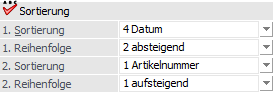
An dieser Stelle kann die Sortierung für die Tabelle "Lieferhistorie" festgelegt werden, wobei die Sortierung zweistufig erfolgen kann.
Hinweis
Wenn die Option "Artikel kumulieren" aktiviert wurde, dann wird nur die 1. Sortierung berücksichtigt.
Ø 1. Sortierung
An dieser Stelle kann die 1. Sortierung definiert werde. Folgende Möglichkeiten stehen zur Verfügung:
ü 1 - Artikelnummer
ü 2 - Artikelgruppe
ü 3 - Artikeluntergruppe
ü 4 - Datum
Ø 2. Sortierung
An dieser Stelle kann die 2. Sortierung definiert werde. Folgende Möglichkeiten stehen zur Verfügung:
ü 1 - Artikelnummer
ü 2 - Datum
Ø 1. Reihenfolge / 2. Reihenfolge
Pro Sortierung kann die Reihenfolge definiert werden, wobei jeweils die Optionen "1 - aufsteigend" bzw. "2 - absteigend" zur Verfügung stehen.
Optionen - Bereich "Übernahme"
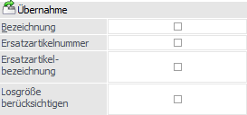
Ø Bezeichnung
Durch Aktivierung dieser Option kann bei der Artikelübernahme (von der Lieferhistorie in die Belegerfassung) neben der Artikelnummer auch die damalige Artikelbezeichnung übernommen werden.
Ø Ersatzartikelnummer
Durch Aktivierung dieser Option kann bei der Artikelübernahme (von der Lieferhistorie in die Belegerfassung) neben der Artikelnummer auch die damalige Ersatzartikelnummer übernommen werden.
Ø Ersatzartikelbezeichnung
Durch Aktivierung dieser Option kann bei der Artikelübernahme (von der Lieferhistorie in die Belegerfassung) neben der Artikelnummer auch die damalige Ersatzartikelbezeichnung übernommen werden.
Ø Losgröße berücksichtigen
Wenn diese Option aktiviert wird, dann wird bei der Übernahme der eingegebenen Liefermenge die Menge auf die Losgröße aufgefüllt (siehe auch VK-Losgrößeneinstellungen in den FAKT-Parametern bzw. im Artikelstamm).
Tabelle "Lieferhistorie"
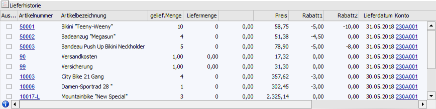
In der Tabelle werden die Informationen der letzten Lieferung mit dem dazugehörigen Lieferdatum, der Laufnummer und vielen weiteren Daten dargestellt.
Hierbei werden einige Spalten blau und unterstrichen dargestellt. In diesen Feldern (Artikelnummer, Konto und Projekt) steht somit über die rechte Maustaste eine DrillDown-Funktion je nach ausgewähltem Element zur Verfügung.
Des Weiteren kann über die rechte Maustaste (Funktion "Spalten anzeigen/verstecken") definiert werden, welche Spalten in der Tabelle angezeigt werden sollen. Neben den standardmäßig eingeblendeten Feldern stehen auch noch zusätzliche Spalten Verfügung.
Die eigentliche Funktion der Tabelle besteht aus der Übernahme von einzelner oder mehrere Artikelzeilen in die Belegmitte, wobei immer die Artikelnummer übergeben wird.
Hinweis
Wenn zusätzlich in der Spalte "Liefermenge" eine Eingabe getätigt wurde, dann wird auch die Menge im Beleg automatisch befüllt. Des Weiteren kann über den Button "Optionen" unter "Übernahme" definiert werden, ob auch die Bezeichnung, die Ersatzartikelnummer und / oder die Ersatzartikelbezeichnung aus der originalen Lieferung übernommen werden soll.
Die Übernahme an sich kann wie folgt vorgenommen werden:
ü Es wird ein Doppelklick auf die Artikelzeile durchgeführt. Dadurch wird der Artikel übernommen, das Fenster Lieferhistorie bleibt im Hintergrund geöffnet.
ü Es wird in der Tabelle ein Feld der gewünschten Artikelzeile markiert und mit Enter bestätigt. In dem Fall wird der Artikel übernommen, das Fenster Lieferhistorie bleibt aber weiterhin geöffnet und bleibt im Vordergrund.
ü Es werden die gewünschten Artikelzeilen über die Spalte "Auswahl" markiert (passiert automatisch bei Eingabe einer Liefermenge) und die Übernahme per Button "OK" bzw. Taste F5 gestartet.
Hinweis
Durch Anwahl des Taste F5 bzw. des Buttons "OK" wird die Lieferhistorie automatisch beendet.
Tabellenbutton
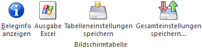
Ø Beleginfo anzeigen
Bei Anwahl des Buttons "Beleginfo anzeigen" wird der zugrundeliegende Beleg der markierten Artikelzeile angezeigt.
Ø Ausgabe Excel
Durch Anwahl des Buttons "Ausgabe Excel" wird der Inhalt der Tabelle nach Microsoft Excel übergeben.
Ø Tabelleneinstellungen speichern
Die Spalten einer Tabelle können grundsätzlich an beliebige Positionen verschoben, bzw. in der Breite entsprechend angepasst werden. Durch Anwahl des Buttons "Tabelleneinstellungen speichern" werden die Einstellungen benutzerspezifisch gespeichert und bei dem nächsten Aufruf des Programmpunktes wieder vorgeschlagen.
Ø Gesamteinstellungen speichern…
Im Gegensatz zu "Tabelleneinstellungen speichern" können mit "Gesamteinstellungen speichern" mehrere Tabellenaufbauten gespeichert und nach Wunsch geladen werden. Zusätzlich werden Sonderfunktionen der Tabelle (z.B. "Spalte gruppieren") ebenfalls bei der Speicherung bedacht.
Buttons
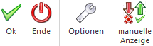
Ø Ok
Durch Drücken des Buttons "Ok" oder der Taste F5 werden die ausgewählten Artikel in die Belegerfassung übernommen und die Lieferhistorie automatisch beendet.
Ø Ende
Durch Drücken des "Ende"-Buttons oder der ESC-Taste werden alle Auswahlen verworfen und das Fenster geschlossen.
Ø Optionen
Durch Anklicken des Buttons "Optionen" können benutzerspezifisch Einstellungen für die Lieferhistorie vorgenommen werden.
Ø manuelle Anzeige
Standardmäßig wird die Lieferhistorie ausgeführt, sobald das Fenster aufgerufen wird. Bei größeren Datenständen kann dieses einige Zeit in Anspruch nehmen. Um diese Wartezeit zu vermeiden bzw. zu verringern, kann der Button "Manuelle Anzeige" aktiviert werden.
Bei dem nächsten Aufruf des Fensters wird die Anzeige nicht mehr direkt gestartet, sondern es können zunächst alle gewünschten Selektionskriterien eingegeben werden und per Button "Anzeigen" das Füllen der Tabelle gestartet werden.